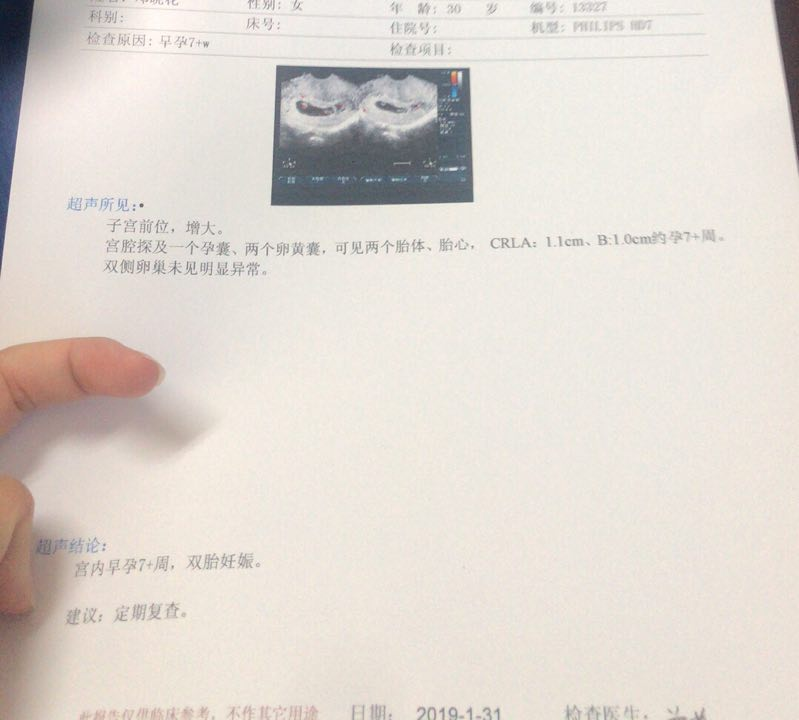
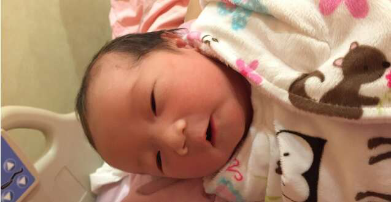
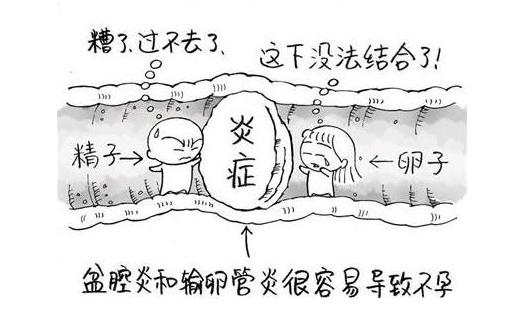

输卵管堵塞、粘连，积水，不通怎么办？用这个方法，不通水不手术，轻松有好孕
如果您正面临这些问题——
1、输卵管粘连、堵塞、不通畅，备孕总是怀不上；
2、通水、造影、宫腹腔镜手术都做了，问题反复，仍旧怀孕难；
请花3分钟，认真读一下这篇文章，我将告诉您一种简单、有效、安全、无痛苦的调养方法，帮助你在2-3个月内，全面改善输卵管通畅情况，顺利受孕做宝妈。
无论是输卵管黏连、积水、通而不畅，还是输卵管上举、脱垂、扭转、输卵管炎症，只要是输卵管问题，都可以借助这种调养方法，获得极大的改善.
现在就添加微信
咨询，
已有5241位女性调养成功
北京公司职员27岁的李娜
“之前输卵管堵塞，通而不畅，还有盆腔炎症，吃中过药调理，还是没怀孕，后来就想着换个办法试试，就试了试营养干预调养法，先是下腹坠憋胀感没了，后来做通水检查，发现输卵管竟然全通了，现在我已经是1岁孩子的妈妈了！”
上海虹梅路176号王芳芳
“医生说过我输卵管堵塞，卵巢功能还不太好，当时说输卵管堵塞，就做了腹腔镜，结果还是一直怀不上，再去查，说我输卵管又堵上了，实在没别的办法，就上网搜了下，看到悦古承调养备孕，就赶紧咨询了，那会也没别的办法，就只好死马当活马医，试了下，没想到的是，大概也就1个多月，自己竟然怀孕了，很大的可能是输卵管调养通畅了！”
天津河东区刘海花
“我是输卵管通而不畅，还有霉菌阴道炎，担心自己怀不上，试了试用体质干预加生活调养的方法，没想到3个月后，现在阴道炎好了，关键是去医院检查，输卵管特别通畅，没什么问题。”
非常多人，都在积极尝试这种方法，如果一种方法，重复验证了3201次，说明什么，说明它已经不是偶然和意外，而是已经得到检验的、被证实有效的，您可以使用的好方法。
现在就添加微信
咨询，
已有5241位女性调养成功
只需按照这个方法去做
您就可以轻松实现如下变化
1 不通水、不手术
1-2个月，改善输卵管炎症、积水问题：让黏连、通而不畅的输卵管重新恢复通畅，重新运送精子和卵子。
2 避免输卵管粘连、堵塞、不通
祛除改善阴道炎、盆腔炎，附件炎。
3 改善难孕体质，让受孕更加容易
促进身体机能恢复，帮助身体形成一个最佳受孕环境。
4 有效避免宫外孕发生
通过调养，改善身体受孕内环境，确保任何人都能顺利健康安全备孕成功。
现在就添加微信
咨询，
已有5241位女性调养成功
成百上千位女士实锤见证：坚持营养干预法
输卵管黏连、堵塞、通而不畅都能有改善！
30岁王女士
调养前：盆腔积液、 一侧积水不畅，一侧粘连、扩张
调养后：调养3个月，盆腔积液没了，输卵管重新通畅，测试正式受孕
30岁的王女士，备孕大半年就是没动静，18年4月做检查，发现盆腔积液、 一侧积水不畅，一侧粘连、扩张， 因为害怕做试管，就听了同事介绍，加了悦古承食养微信，了解情况后，调养小半年，先是感觉自己有劲了，脸上有血色了，配合艾灸热敷、同时调整情绪，仅仅用了3个月，盆腔积液没了，输卵管重新通畅了起来，12月的时候，做验孕试纸测试，秒红，验血检查HCG翻倍不错，孕酮的值也不低，正式确认身体好孕！
87年出生的郭女士
调理前：卵管双侧通而欠畅
调养后：去医院抽血检查，HCG升高，确定已怀孕
87年出生的郭女士，2018年4月份，做输卵管造影检查，结果显示输卵管双侧通而欠畅，因为年龄大，特别担心怀不上，后来咨询了悦古承食养老师，在了解情况后，建议她营养干预，配合排卵期艾灸肚子+月经期运动调养方法。
18年8月14日，月经没来，8月15号，试纸测试发现，明显两条杠。8月20号，去医院抽血检查，HCG升高，确定已怀孕，因为担心宫外孕，7周多时候，去医院做了B超，发现是宫内孕，宝宝一切发育正常。如今腹中的宝宝已经36周+了。
.jpg)
28岁张女士
调养前：经期延长、输卵管右侧有三厘米多积水，伞端阻塞
调养后：输卵管重新变通畅，白带清洁一度，输卵管积水也消失了
28岁的张女士18年3月份，开始经期延长，伴有出血，历时5个月才治好，因子宫腹部长期充血，引起子宫炎，9月体检时发现子宫内膜增厚严重，白带检查三度，输卵管右侧有三厘米多积水，伞端阻塞，医生建议做宫腔镜手术、搞结扎，因为还未生育又惧怕疼痛，想先选择保守治疗。后来按照悦古承营养干预调养法调养，并坚持每日跳绳。调理3个月后，张女士做造影检查，白带清洁一度，输卵管积水也消失了！
32岁罗女士
调养前：结婚3年备孕不上，检查右侧输卵管堵塞、左侧通而不畅
调养后：成功怀上孩子，上个月初八顺利产下一男婴
罗女士13年结婚，因老公家三代单传，刚结婚公公婆婆就让要孩子，婚后一直备孕，却3年无果，直到16年3月份去医院检查，才知道自己输卵管堵塞，精卵无法结合。一开始吃了很多药片，没结果，后来又花了很多钱，忍痛做了输卵管造影，把右侧打通，但还是通而不畅，左侧伞部粘结加积水，也是通而不畅，医生也不建议备孕，说怀孕几率很低，也容易宫外孕。
考虑到二次手术的费用，还有对身体伤害大的因素，罗女士并未选择再进医院，通过同事介绍，咨询悦古承食养调理中心，中心老师根据罗女士的情况，制定针对性的体质调养干预方案，坚持4个月后，果然等来了罗女士的好消息！去医院再次确诊后，罗女士确实已成功怀上了孩子，并于上个月初八顺利产下一男婴，母子平安……
成百上千位备孕女性实锤，只需坚持营养干预调养法，输卵管黏连、堵塞、通而不畅都能逐步有改善！
现在就添加微信
咨询，
已有5241位女性调养成功
需要提醒您：营养干预调养法，仅对4类输卵管问题起作用
营养干预调养法虽然很好，但是对输卵管左右两侧完全堵塞、宫外孕两侧输卵管全部切除的人，无能为力，坦白讲，这种调养方法，仅仅对以下几种有输卵管问题的女性有事半功倍的效果——
第一类：刚刚检查出输卵管通而不畅，且伴发有粘连情况的女性。
第二类：体质肥胖，或有妇科炎症，存在一侧输卵管粘连，一侧通而不畅的情况的人。
第三类：已经有过输卵管通水、做过宫腹腔镜，不希望输卵管二次堵塞的人。
第四类：有过流产、宫外孕经历，但是输卵管未做切除，希望自然受孕的女性。
营养干预调养法秘密所在
内调+外治+生活干预，三管齐下，百试百灵
正如我们所知道的，输卵管是两根特别细的管道，连接子宫和卵巢，是精子和卵子相遇的通道和场所，而炎症、痰湿正是导致输卵管问题发生的重要原因。
体内的有炎症、痰湿重的话，就好比把一个特别细的管道泡在满是垃圾和污水的环境里，时间久了，管道自然就会变窄生锈，输卵管也一样，因为痰湿重，所以就出现了狭窄、黏连，甚至堵塞的情况。
这种情况下，不管是卵子，还是精子，都不能很好在输卵管里活动，两者很难相遇，备孕自然不易成功，或者虽然相遇了，但直接停留在输卵管，很容易发展成宫外孕。
因此，老师认为：要解决输卵管粘连、堵塞、不通的问题，不是盲目手术通水，而应该根据个人体质，从改善身体内环境入手，调养结合，才能立竿见影。
与普通的通水、手术不同，营养干预调养法，全面改善身体内环境，彻底改变引发输卵管问题的环境，有效避免输卵管问题二次发生，为身体成功受孕创造非常好的受孕条件。与传统方法相比——
营养干预调养法
无痛苦、没风险、不折腾，任何人都可以试
与输卵管通水，引起的疼痛难忍、腹痛、身体不适；或者花费大量检查费做的宫腹腔镜不同，营养干预调养法，是通过科学营养干预，配合理疗和穴位艾灸，逐步改善各类输卵管问题，调养全程无任何痛苦或者不适。
不是药，无创伤，只需根据个人体质情况，采取针对性的营养干预调养法，通过专门的食养配方，结合饮食运动方案，开展调养干预，完全没有任何风险，不用担心有任何的副作用，非常安全，操作简单方便，特别容易坚持。
这种调养方法非常简单、特别方便，不需要打针，不需要吃药，不需要往医院跑，还不需要吃难以下咽的汤药，更不需要体外授精、试管婴儿，只需能够按照调养方案，坚持2-3个月，就能让你轻轻松松的解决怀孕难题。
如果你希望花大把大把的钱，继续通水，忍受通水时的腹部胀痛、身体不适，或者躺在冰冷的手术台上，任由各类医疗器械在腹腔、宫腔内肆意游走，那您可以继续尝试各种检查手术，等手术无望的时候，再来尝试营养干预调养法，或者您想避免不必要的花费，希望靠自己去怀孕，而非试管、体外受精、胚胎移植等辅助生殖技术受孕，那这个方法就非常适合您了。
只需添加微信，说明您的情况，无须花费一分钱，就能立即明白针对您的输卵管问题，究竟应该如何调养。
现在就添加微信
咨询，
已有5241位女性调养成功
更为重要的是
您还可以免费得到两项额外服务
一套知名中医艾灸调养课:
专门针对输卵管堵塞、黏连等问题专题录制
由中医妇科专家亲自录制，已经有300多位有各类妇科问题的女性，都通过学习该课程后，极大的改善了自己的身体状况，同样课程在相关知识付费平台，收费多达99元-199元不等，现在只需添加微信，免费送您学习课程。
一份专门针对输卵管防治的健康食谱：
5位营养师共同制定的营养食谱，
帮您更快改善输卵管问题
由5位国家公共营养师制定、专门针对女性孕前调养的营养食谱，仅需坚持2-3个月，就能帮您改善输卵管，恢复易孕体质，让您怀得上、怀得好。
现在立即添加下方微信，咨询了解，觉得有帮助，您就立即开始尝试，即使收获不大，您也不会有什么损失，唯一需要您做的只是问一问。也许正好可以解决您目前的问题呢？
现在就添加微信
咨询，
已有5241位女性调养成功
为什么还着急惶恐，继续忍受输卵管堵塞、黏连等问题带来的难孕、各种检查带来的沮丧和痛苦，现在就添加微信，立即开始尝试科学的调养方法，改善自己输卵管的问题。
最后需要提醒您的是：每天仅对前100名咨询者，免费提供中医艾灸课程和健康食谱方案制定。